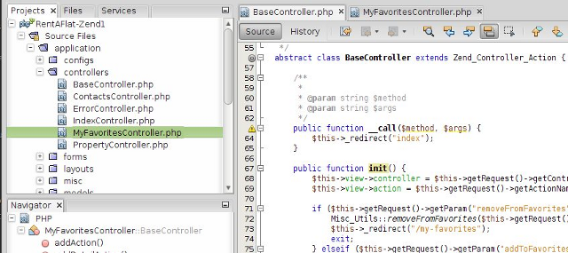

Специализированная среда для создания кода PHP и полная интеграция с веб-стандартами, а также полная поддержка технологий разработки HTML5, JavaScript и CSS3, как указано на странице Поддержка разработки веб-приложений на HTML5.
Редактор PHP в NetBeans предоставляет шаблоны кода и средства создания кода, такие как средства создания методов getter и setter, средства рефакторинга (включая "мгновенное переименование"), всплывающие подсказки для параметров, советы, функции быстрого исправления и интеллектуальное автозавершение кода.
Используйте синтаксическую и семантическую подсветку кода, всплывающие окна документации, форматирование и свертывание кода, а также выделение вхождений и точек выхода, интеллектуального автоматического завершения кода с помощью операторов try и catch, интеллектуального предварительного заполнения параметров метода и прямоугольного выделения.

IDE NetBeans для PHP 7.3 предлагает целый ряд функций, связанных с разработкой с помощью PHP 5.4. Можно настроить запуск проекта PHP 5.4 во встроенной веб-службе PHP 5.4. Автоматическое завершение кода PHP в среде IDE поддерживает стили массивов, такие как разыменование массивов и краткий синтаксис массивов. IDE NetBeans также распознает Признаки и анонимные переменные объектов (также называется "быстрое создание экземпляров"). И, наконец. IDE NetBeans для PHP 7.3 включает дополнительные функции, такие как вызываемые типы подсказок, двочиное представление целых чисел и вызовы по схеме Class::{expr}().

В IDE NetBeans поддерживаются следующие распространенных веб-платформы.
Вы можете создавать проекты PHP на этих платформах, выполнять команды платформ, переходить от контроллеров (действий) к представлениям, использовать аннотации платформы и автозавершение кода в редакторе, а также менять настройки.

В IDE NetBeans для PHP реализована поддержка непрерывной интеграции. Непрерывная интеграция представляет собой процесс разработки программного обеспечения, включающий управление версиями и специализированный сервер. На специализированном сервере запускаются тесты PHPUnit и покрытия кода на этом программном обеспечении.
Результаты тестов связаны с данными системы управления версиями, что позволяет разработчикам быстро и легко находить дефекты в программах. В IDE используется Шаблон заданий Jenkins для проектов PHP, который должен быть настроен с использованием необходимых подключаемых модулей и средств на сервере интеграции.
Поддержка PHP на серверах непрерывной сборки

Проект NetBeans предлагает версию IDE, предназначенную для разработки веб-сайтов PHP, включающую в себя множество языков написания сценариев и разметки. Редактор PHP динамически интегрирован с функциями редактирования HTML, JavaScript и CSS.
Сосредоточьте свое внимание на коде и ускорьте процесс сканирования кода, исключив отдельные каталоги в окне "Свойства проекта". В IDE NetBeans полностью поддерживается итерационная разработка, поэтому тестирование проектов PHP выполняется по стандартным шаблонам, знакомым веб-разработчикам.

Отладка кода PHP с помощью Xdebug: проверяйте локальные переменные, устанавливайте наблюдение за переменными, устанавливайте точки останова и просматривайте выполнение кода в реальном времени. Переходите к действиям объявления, типам и файлам с помощью сочетаний клавиш "Перейти к" и гипертекстовых ссылок. Используйте глобальный путь включения (include) PHP для всех проектов или настраивайте его для каждого проекта.
IDE NetBeans для PHP также поддерживает отладку командной строки: выходные данные программы PHP отображаются в командной строке в самой среде IDE и пользователи могут проверить созданный без перехода в браузер.
Разработчики могут отлаживать сценарии и веб-страницы как локально, так и удаленно. Интеграция с отладчиком PHP NetBeans позволяет сопоставлять пути сервера с локальными путями, что обеспечивает удаленную отладку.